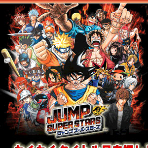
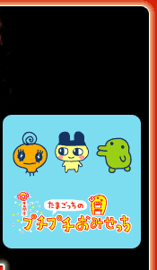
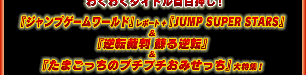
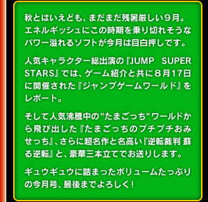

JUMP SUPER STARS：
JUMP SUPER STARSプロジェクト 2005 Nintendo/GANBARION
逆転裁判 蘇る逆転：
CAPCOM CO.,LTD. 2001, 2005 ALL RIGHT RESERVED.
たまごっちのプチプチおみせっち：
BANDAI・WiZ 2004 BANDAI 2005
>> 2005年9月号のサイトマップへ
>> N.O.Mのバックナンバーページへ